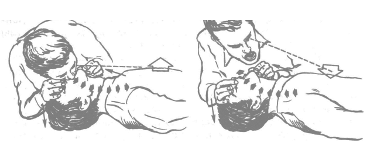
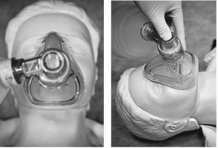
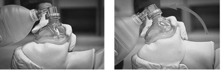

Искусственная вентиляция легких.
ИВЛ на этапе базовой СЛР не подразумевает использования специальных устройств, не считая защитных, т.е. осуществляется экспираторным (за счет выдоха реанимирующего) методом. Однако эффективность экспираторных («изо рта в рот» или «изо рта в нос») вдохов существенно ниже ручной (при помощи дыхательного самораздувающегося мешка) или аппаратной вентиляции. Более высокая эффективность искусственных вдохов, выполняемых с помощью дыхательного мешка или аппарата ИВЛ, обусловлена способностью регулирования объема одного вдоха, меньшей нагрузкой на реанимирующего, возможностью использования для ИВЛ высоких концентраций кислорода, а также отсутствием риска инфицирования оказывающих помощь. Дыхательные мешки, имеющиеся на оснащении всех медицинских учреждений, отличаются простотой использования, схожестью и надежностью конструкции. Кроме того, они снабжены стандартным разъемом, позволяющим использовать их не только с лицевой маской, но и с другими устройствами, обеспечивающими и поддерживающими проходимость дыхательных путей:
• эндотрахеальной трубкой (ЭТТ);
• воздуховодом I-Gel;
• комбитьюб;
• ларингеальной маской.
Использование с дыхательным мешком лицевой маски имеет ряд специфических особенностей, требующих обеспечения герметичности ее прилегания.
Современные стандарты ИВЛ:
• соотношение компрессий грудной клетки и искусственных вдохов при СЛР взрослых составляет 30:2;
• основной метод ИВЛ при СЛР - ручной (дыхательным мешком), в идеале с ингаляцией 100%
• продолжительность каждого вдоха при ИВЛ должна составлять 1 с;
• проведение двух дыхательных циклов не должно прерывать НМС более чем на 5 с;
• при СЛР дыхательный объем, т.е. объем одного вдоха, для взрослых должен составлять 6-7 мл/кг, что в среднем составит 500-600 мл (для среднестатистического пациента массой 70-100 кг).
Исследования на животных показали, что в первые 2-4 мин после внезапной остановки кровообращения в крови сохраняется достаточный запас кислорода, и выполнение искусственных вдохов не является категоричным условием проведения реанимационных мероприятий. Тем более что компрессии грудной клетки создают столь малый кровоток, что любые паузы в них могут нанести непоправимый вред. Поэтому, по современным представлениям, при отсутствии приспособлений для ИВЛ и средств индивидуальной защиты допускается отказаться от ИВЛ при коронарной смерти, ограничиваясь только проведением закрытого массажа сердца, особенно у неизвестных больных и пострадавших.
Однако если проведение НМС без ИВЛ лучше, чем вообще отсутствие помощи, то сочетание НМС и ИВЛ все же остается приоритетным методом выбора СЛР, тем более для подготовленных реанимирующих.
В случаях же остановок сердца, связанных с острой гипоксией (например, утопление, обструкция дыхательных путей, отравление наркотическими препаратами), или при затянувшейся СЛР (более 2-4 мин) проведение традиционной базовой СЛР (НМС+ИВЛ) является обязательным для всех, как для медицинских сотрудников, так и для спасателей, не имеющих специальной медицинской подготовки.
При отсутствии специальных средств проведения ИВЛ следует
прибегнуть, используя индивидуальные средства защиты, к экспираторному
методу проведения ИВЛ - «изо рта в рот» или «изо рта в нос» - по
следующей методике:
• санировать верхние дыхательные пути;
• при отсутствии данных о повреждении шейного отдела позвоночника
разогнуть голову пациента или использовать воздуховод;
• прижать крылья носа пострадавшего к носовой перегородке одной
рукой при ИВЛ методом «изо рта в рот», или закрыть рукой рот, если ИВЛ
проводится методом «изо рта в нос»;
• сделать глубокий вдох;
• обхватить своими губами открытый рот (или нос) пострадавшего;
• произвести медленно (в течение 1 с) искусственный вдох за счет
своего выдоха, наблюдая за поднятием грудной клетки пациента (рис. 10);
• при отсутствии у пациента поднятия грудной клетки установить и
устранить причину непроходимости дыхательных путей.

Рисунок 10. Этапы проведения ИВЛ.
Оптимальным методом проведения ИВЛ подготовленными реанимирующими на догоспитальном этапе остается ручной метод - дыхательным мешком с лицевой маской.
Лицевая маска прикладывается к лицу пациента по определенным
правилам, что обеспечивает наилучшую герметичность (рис. 11):
• маска прикладывается при не разогнутой голове;
• нижний край жесткой части маски располагается в ментальной
области, не захватывая подбородок пациента;
• верхний край жесткой части маски располагается не выше уровня
бровей пациента;
• маска располагается на лице симметрично, строго по средней линии.

Рисунок 11. Правильное расположение лицевой маски
При прикладывании лицевой маски при разогнутой голове практически всегда нарушается расположение маски как по вертикали, так и смещение ее от срединной линии.
Лицевая маска прижимается к лицу пациента двумя пальцами - большим и указательным: большой палец располагается на верхней части маски, указательный прижимает ее нижнюю часть. Пальцы реанимирующего должны располагаться на жесткой части маски (рис. 12). Мизинец, средний и безымянный пальцы удерживают нижнюю челюсть. Герметичность лицевой маски обеспечивается правильным расположением и удержанием, а не силой ее прижатия.

Рисунок 12. Разгибание головы: А - прижатие лицевой маски к не разогнутой голове пациента I и II пальцами руки; Б - разгибание головы пациента III, IV и V пальцами руки реанимирующего
После прижатия лицевой маски проводится разгибание головы пациента.
Прием выполняется свободными пальцами руки реанимирующего, удерживающей маску: мизинцем, средним и безымянным пальцами он подтягивает нижнюю челюсть пациента на себя (рис. 12), при этом прижимая маску к лицу пациента большим и указательным пальцами. Разгибание головы с помощью второй руки реанимирующего недопустимо, так как это приводит к значительной потере времени и утрате герметичности лицевой маски при перехвате дыхательного мешка.
Сжатие дыхательного мешка производится пальцами руки реанимирующего. Во время проведения СЛР пациенту для одного искусственного вдоха требуется всего 500-600 мл (6-7 мл/кг) воздуха. Объем дыхательного мешка составляет 1,6-2 л.
Для того чтобы на каждый вдох приходился одинаковый объем воздуха, необходимо сжимать дыхательный мешок до смыкания пальцев.
Исключительно важно после первого вдоха дать мешку полностью расправиться, если этого не сделать, то второй вдох будет меньшего объема.